Služby
Ortofoto
Vytváříme georeferencované ortofotomapy s deklarovanou přesností. Díky leteckým snímkům z našich dronů získáte nezkreslený a věrný obraz sledovaného území. Výsledná data jsou ideálním podkladem pro projekční práce, hloubkové analýzy i prezentace. Vysoké rozlišení vám zajistí detailní podklad pro každé strategické rozhodnutí.
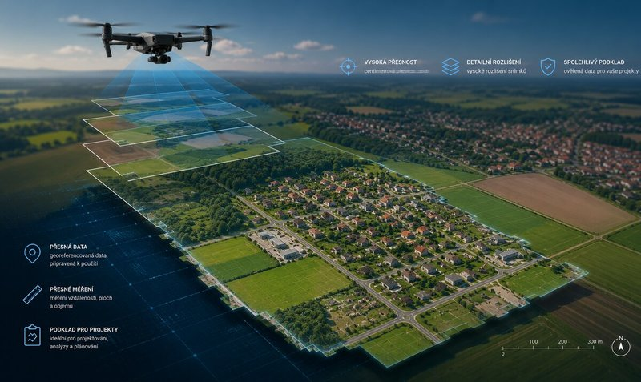
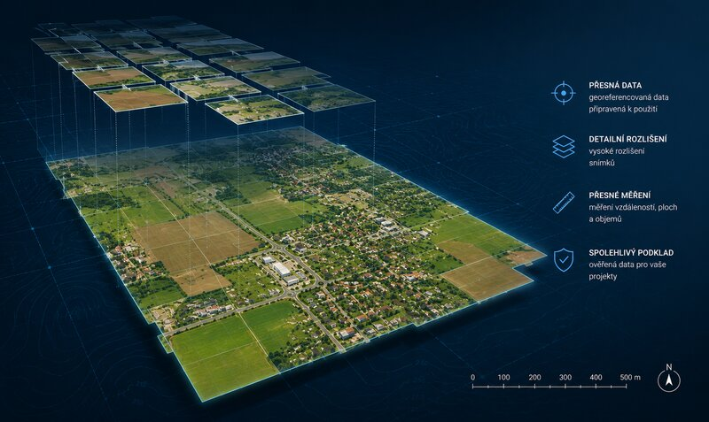
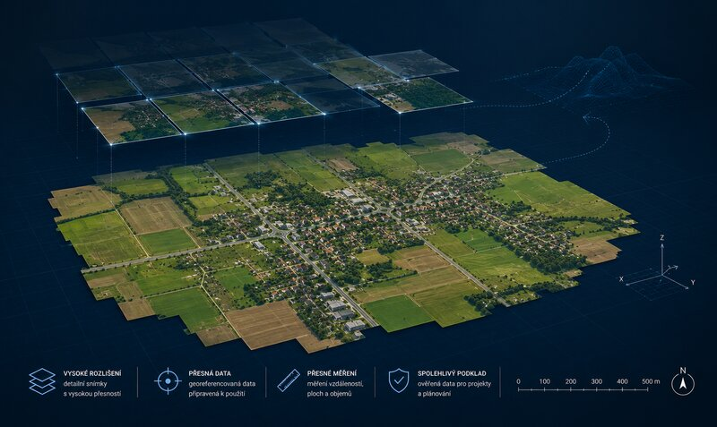
Interaktivní srovnávač rozlišení
Porovnejte detail standardních satelitních map a našeho přesného snímkování z různých výšek letu.
Analýza zdraví rostlin
Vizualizace vitality porostu pro včasnou detekci suchých ložisek, oslabení plodin nebo zaplevelení.
Kontrola sečení
Porovnání a vizuální kontrola provedení seče luk a polí v časovém odstupu.
3D Modely
Tvoříme detailní 3D modely objektů, které přesně zachycují jejich tvar, strukturu i výškové poměry. Jsou nepostradatelné pro vizualizace, posuzování aktuálního stavu budov nebo vzdálenostní a strukturální analýzy. Získejte realistický digitální dvojče svého objektu, které si prohlédnete z libovolného úhlu.


Interaktivní 3D prohlížeč
Prohlédněte si detailní 3D digitální dvojče pozemku s rodinným domem. Model můžete libovolně otáčet, přibližovat a zkoumat z libovolného úhlu.
Kubatury
Pomocí opakovaného snímkování precizně sledujeme změny v čase a určujeme úbytek či přírůstek materiálu. Porovnáním jednotlivých etap měření získáte spolehlivý přehled o objemech a skutečném postupu prací. Tato služba je klíčová pro stavebnictví, těžební průmysl a logistiku sypkých materiálů.
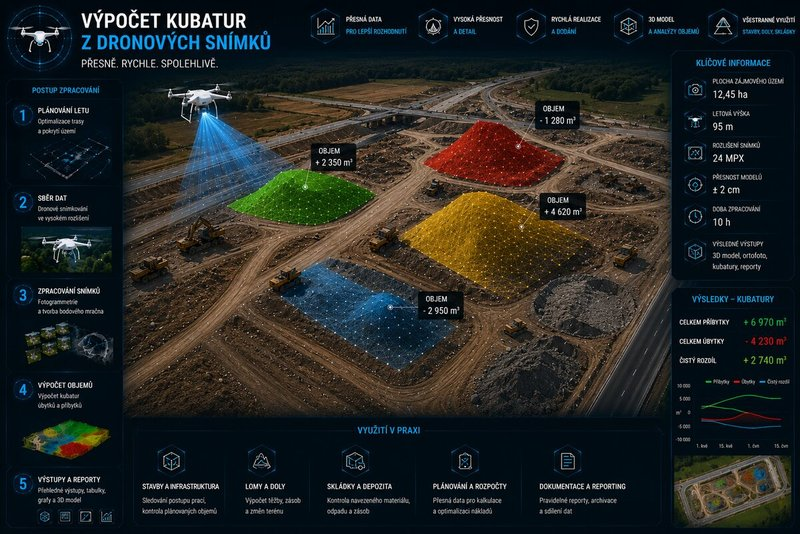
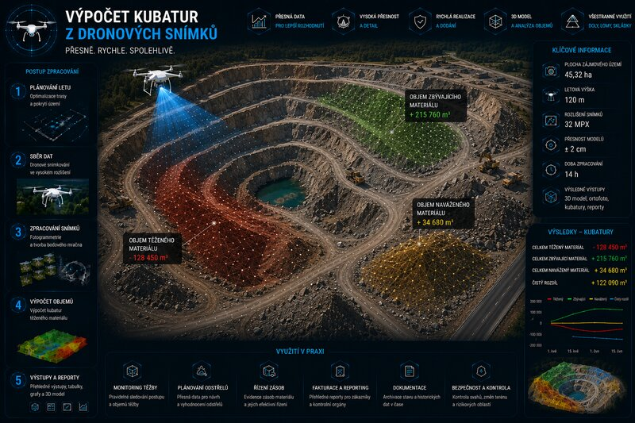
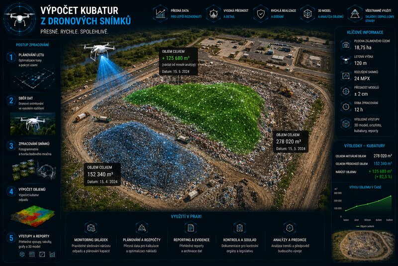
Časosběr
Zajišťujeme pravidelné snímkování v průběhu času prostřednictvím videí, fotografií a tematických map. To vám umožní zpětně sledovat vývoj projektu od prvního kopnutí až po finální dokončení. Je to atraktivní a přehledný nástroj pro kontrolu investic, archivaci postupu a reprezentativní prezentaci zakázky.

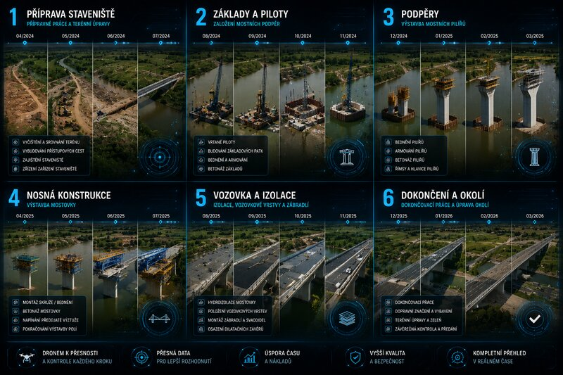
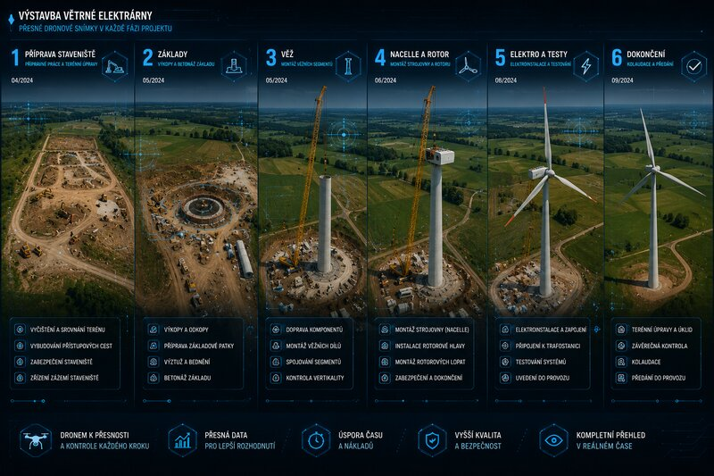
Interaktivní časosběrný přehrávač
Sledujte postupný vývoj stavby luxusní vily na mořském pobřeží od začištění pozemku až po finální zahradní úpravy.
Krizový management
Nasazujeme drony tam, kde rozhoduje rychlost a okamžitý přehled – například při povodních či jiných mimořádných událostech. Poskytujeme operativní monitoring vodních toků i dopravní situace, včetně analýzy průjezdnosti pro složky IZS. Naše data pomáhají k rychlejšímu rozhodování a efektivnějšímu řízení v kritických momentech.
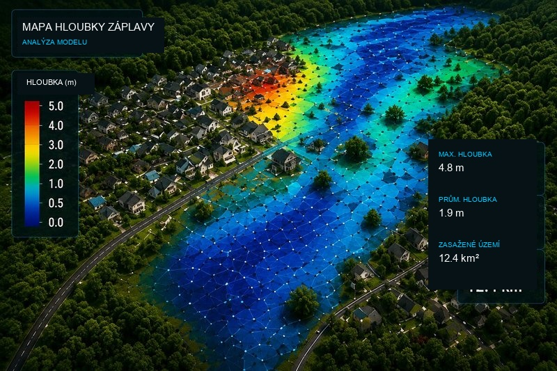
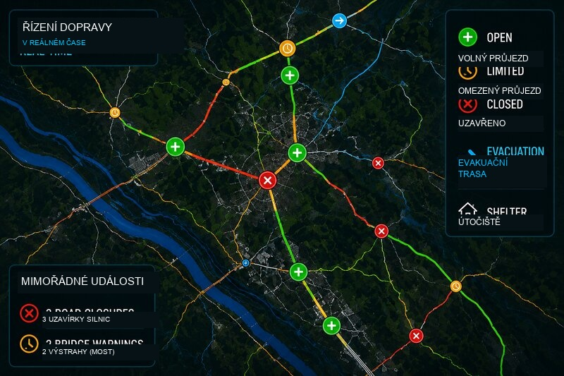
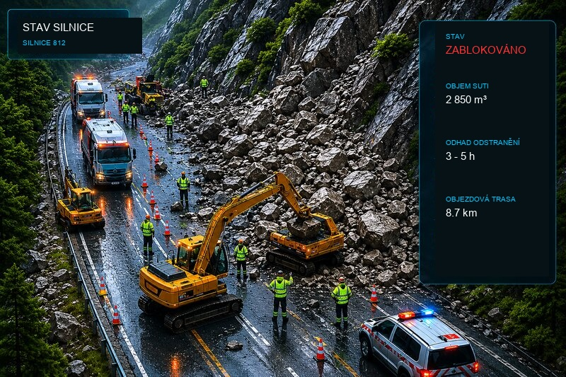
Foto a Video
Vytváříme špičkové letecké fotografie a videa, které posunou vaši prezentaci na novou úroveň. Obsah je optimalizovaný pro webové stránky, sociální sítě i marketingové kampaně. Zároveň nabízíme specializované záběry pro realitní makléře, které pomáhají nemovitosti prodat rychleji. Zaujměte unikátní perspektivou, která dodá vašemu podnikání charakter.

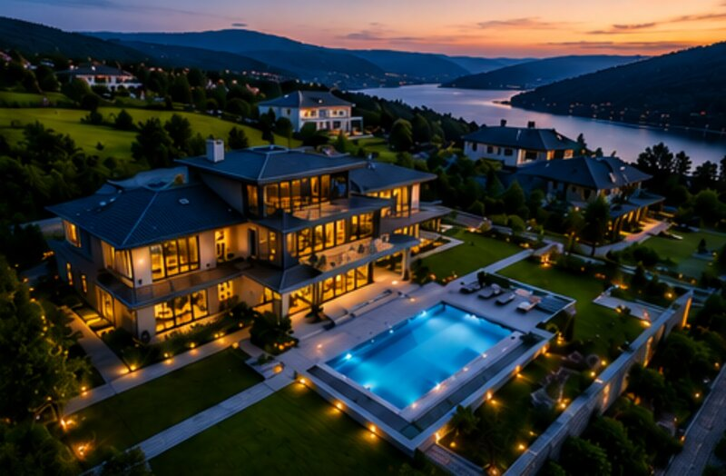
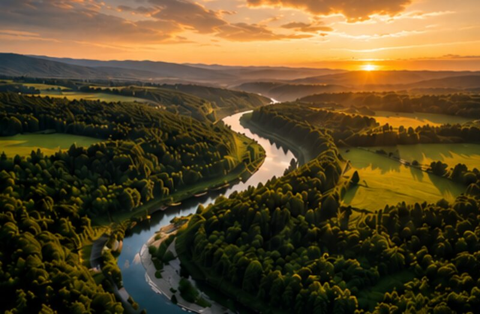